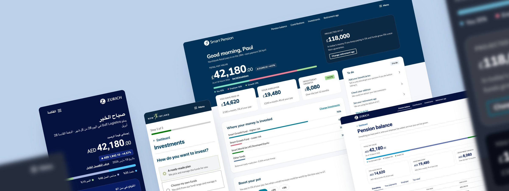
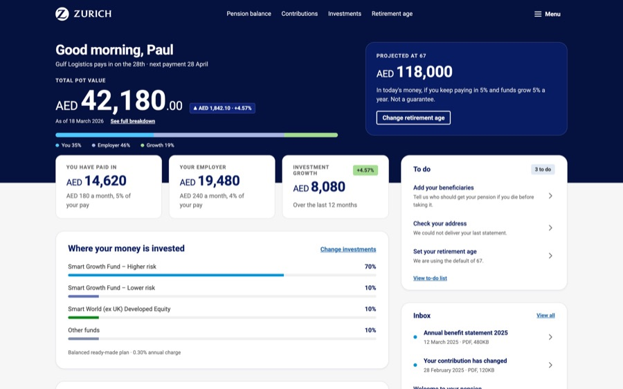
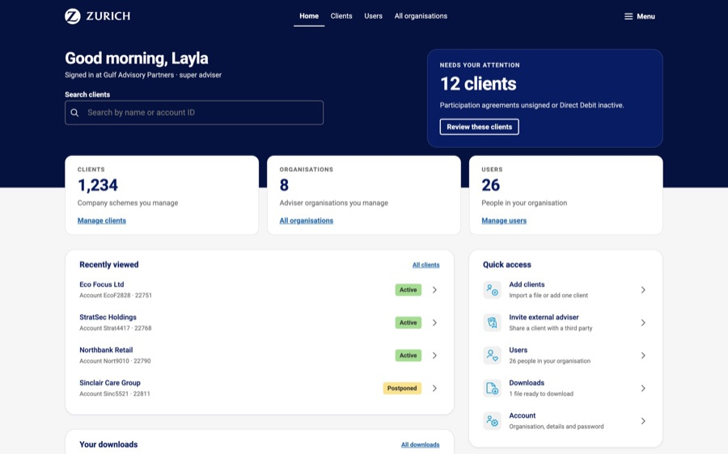
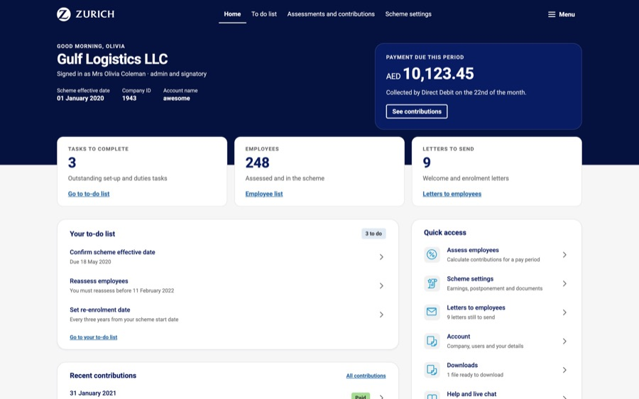
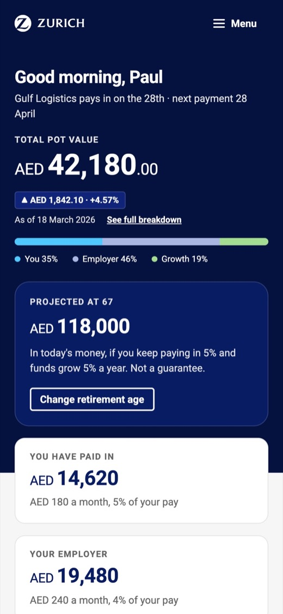
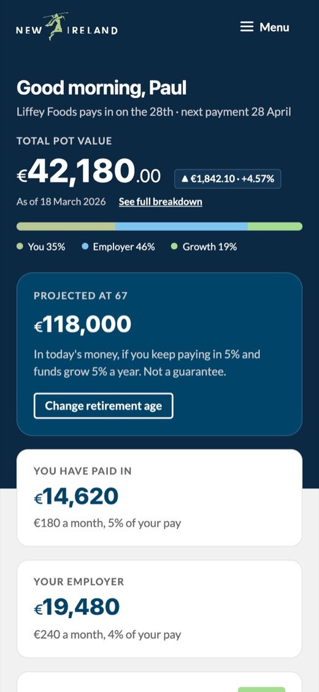
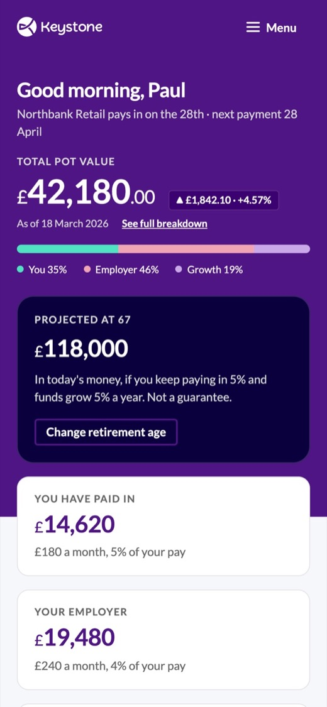
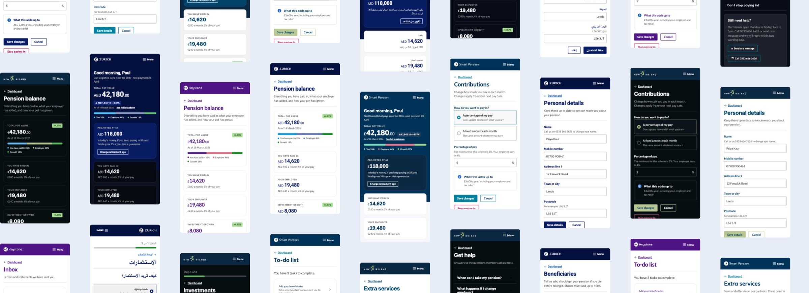

Case study · Smart Pension
Designing pensions people can understand
I designed and led Keystone, the design system behind Smart's three products, and applied it hands-on across them: three audiences, four brands and two reading directions.
Smart grew from around 150 to 800 people while I was there, and its platform had to serve three very different audiences: members, advisers and employers, across Smart's own brand and its white-label partners, in several languages and markets. Experiences were inconsistent, accessibility needed work, and teams were solving the same problems independently. My role combined hands-on product design with leading the design system behind it.
Design systems
- Tokens, components, patterns, templates and documentation
- Theming for four brands, light and dark, English and Arabic
- Alignment with engineering, plus governance and adoption
Product design
- End-to-end journeys for members, advisers and employers
- Screens, flows and prototypes for real customer journeys
- Aligning every product to the design system as it was redesigned

The challenge
The existing platform wasn't built for that scale: teams worked independently, Design and Engineering lacked a common language, and improvements made in one product rarely reached the others. The member, adviser and employer experiences were each designed and built differently, with nothing shared between them. The symptoms looked like UI problems; the underlying challenge was building a shared platform that could scale with the organisation.
Building the Design System
I approached the Design System as a product, not a component library, working hands-on across tokens, components, patterns, templates, accessibility, responsive behaviour and documentation, with Design and Engineering deliberately brought together around the same source of truth. I worked closely with engineers to make sure design principles translated into robust implementation, and used that implementation to identify where the system itself needed to evolve.
As the system matured, I pushed beyond individual components, turning recurring problems, such as multi-step journeys, dynamic forms and validation, into reusable patterns teams could apply instead of starting from scratch. Form validation is one example: designed once, the same error summary and messages now run on every form in all three products. It confirmed how I think about Design Systems: a pattern solved once should never need solving again. The system's job is to make reuse the easy path, not the exception.
Storybook and the documentation site became a shared reference point. Designers could see how components were implemented, engineers could see design intent, behaviour and expected states. This reduced ambiguity and made the system less dependent on individual people knowing how everything worked; the Design System became a shared product between the two disciplines, not something handed from one to the other.
As adoption grew, governance mattered more, but I didn't want it to become an approval process. Instead, I ran regular alignment sessions with the front-end team, so design and code moved together. Around that sat a roadmap, a contribution model and onboarding for new teams. The aim was shared ownership, not central control.
Applying the system to real products
I worked with product teams to apply the system across Member, Adviser and Employer, in regular working sessions around real customer journeys with product designers, our content designer, engineers, product owners and subject-matter experts. Every product problem we solved fed a pattern back into the system, and working on real journeys exposed gaps far faster than designing components in isolation.
View example flowsLive prototypes of six key flows, opens in a new tab
Three apps
Three roles, one system
The member, adviser and employer dashboards, all in Zurich: proof the same components and tokens carry a workplace pension end to end, not just the member experience.
Member dashboard

Adviser dashboard

Employer dashboard

Before and after
The same products, rebuilt on the system
Once the system was in place we applied its tokens, components and patterns to every product, and improved them as we went: clearer information architecture, and the improvements product owners had been asking for.
Designing for multiple brands
Smart needed to support different brands and white-label partners without building separate products, so I helped establish a theming approach based on shared functionality, components and code, with brand expression handled through configuration. The underlying experience stayed consistent while the visual expression changed, which became increasingly important as Smart expanded internationally. The principle: don't create a new Design System every time a new brand appears. Build the platform so brand differences can be expressed through configuration.
Multi-brand theming
One dashboard, every brand
All three apps were built once and reskinned per partner: Smart, Zurich, New Ireland and Keystone, each in light and dark. Shown here is the member dashboard. Layout and components stay fixed; only colour, type and iconography change.
Light




Scalability also meant anticipating requirements before they became one-off problems: building support for right-to-left languages into the platform rather than treating Arabic as an isolated request, and integrating localisation into the workflow so content could evolve independently from interface design. Don't solve today's exception. Improve the platform so the next team doesn't have the same problem.
Right to left
The member experience, in Arabic
Right to left is built into all three apps, for any partner that needs it. Shown here is the member app for Zurich. Layout mirrors; components and tokens don't change.
Measuring whether it worked
The real test wasn't the number of components in the library. It was whether teams could deliver better products with less duplication. The US team built their own, separate products on the same design system, adopting it from the beginning, and delivered roughly 50% faster than the timeline originally forecast for the project, a forecast made before they knew there was a design system to build on. The saving ran across design, compliance, stakeholder review, iteration and development. The same speed-up was reflected in our London HQ team. For members, advisers and employers, every product built on the system met WCAG AA accessibility.
What I learned
Design Systems don't fail because someone built the wrong button. They struggle when teams aren't aligned, ownership is unclear, knowledge is locked inside individuals, and the platform isn't connected to real product delivery.
The technology matters, but successful Design Systems also need the right design practice, technical foundations, relationships, governance and operating model around them. The most effective approach was staying hands-on while creating the conditions for other teams to succeed.
